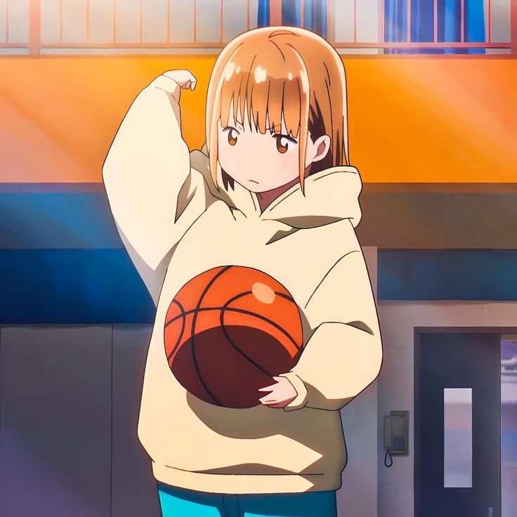

私の漫画ポートフォリオは、アートを通じたストーリーテリングへの情熱を表現する場です。伝統的な技法とデジタル技法の両方を愛し、キャラクターや世界に命を吹き込む、緻密で感情豊かなイラストを描いています。 [少年漫画、少女漫画、ファンタジー、日常系など、あなたの専門ジャンル] を得意とし、ダイナミックなアクション、表情豊かなキャラクター、没入感のある物語を重視しています。細部にまでこだわってページを作り上げ、各コマが物語を進めると同時に、キャラクターの感情をしっかりと伝えられるように心がけています。 私の漫画を通じて、読者と深くつながり、彼らが住む世界と同じくらい鮮やかで魅力的な物語を届けたいと願っています。 